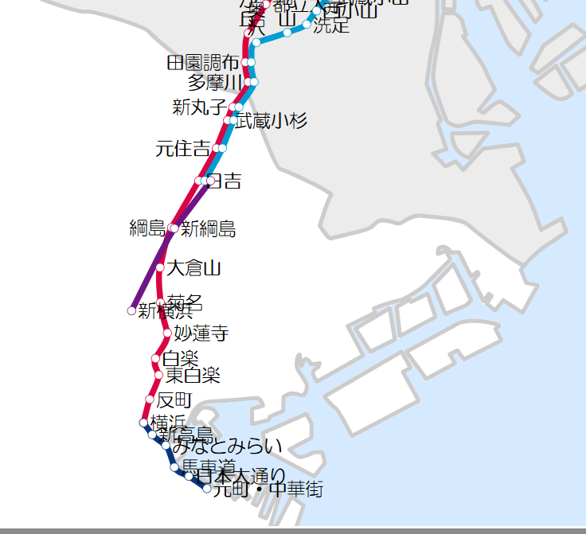
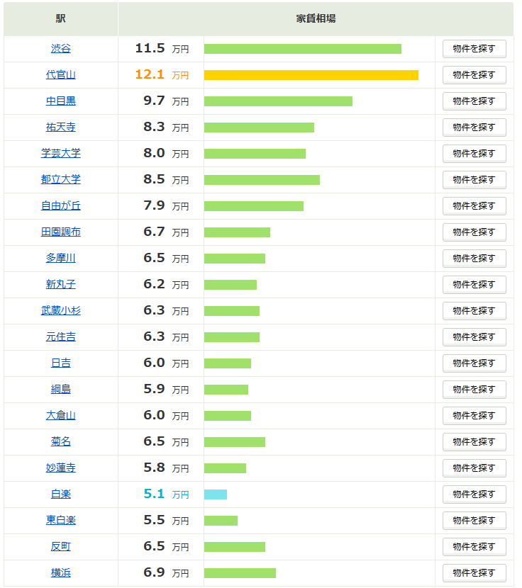
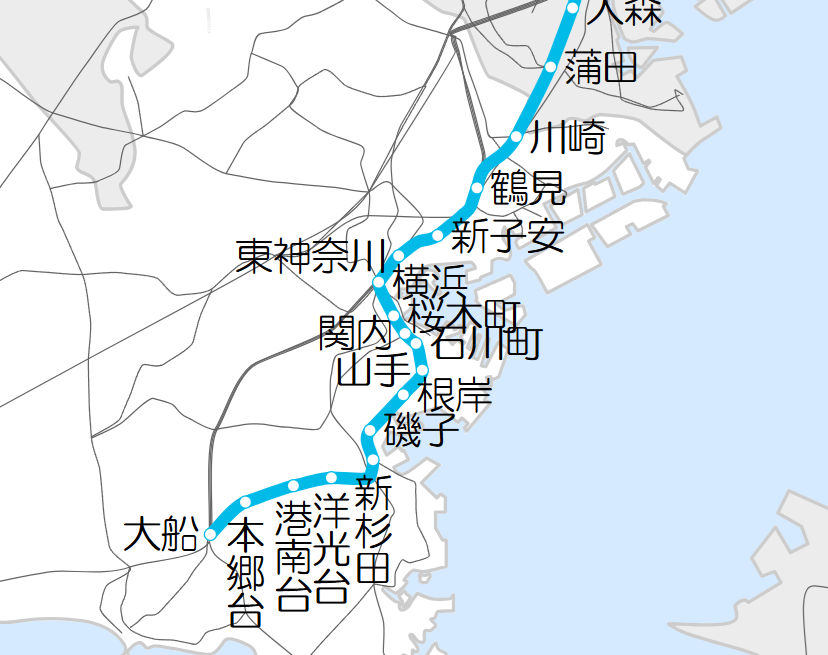
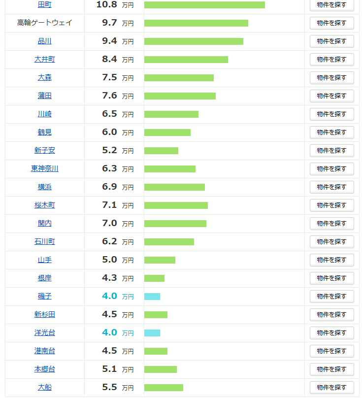
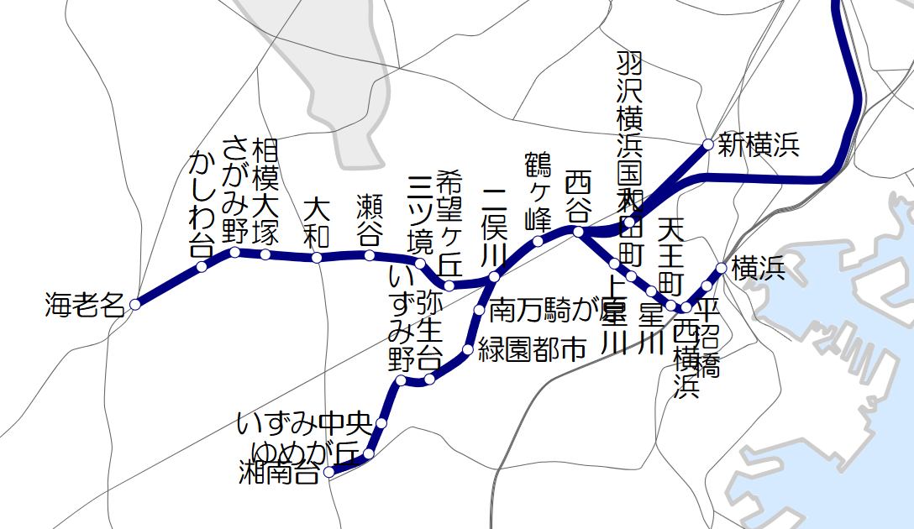

東白楽駅 〜 妙蓮寺駅（家賃穴場エリア）
家賃の安さ
物価の安さ
東横線内で安く抑えたいならこの区間がイチオシ。東白楽・白楽は近くに有名な「六角橋商店街」があり、食品館あおばや業務スーパーなど自炊派の味方が揃っています。JR東神奈川駅へも徒歩圏内で、イオンも使えて利便性は抜群。妙蓮寺には格安スーパーの代表格「オーケー」があるため、こちらも非常に食費を削りやすい環境です。
一人暮らし（1K/ワンルーム・約20m²）のための路線別ガチ考察
みなとみらいエリアや横浜駅周辺への通勤にあたり、「どこに一人暮らしをしようか」「家賃や物価が安いエリアはないか」と悩んでいる方は多いのではないでしょうか。
本サイトでは、神奈川県相模原市在住歴2年の筆者が、単身者向け（1K/ワンルーム・占有面積20m²前後）の視点で、横浜駅アクセス路線の住みやすさを本音で紹介します。
横浜市は面積 438.23km²、人口約377.2万人を擁する、日本最大の政令指定都市です。東京都心からは30～40km圏内とアクセスも良く、昼夜間人口比率は91.1とベッドタウンとしての性格を持ちながらも、京浜工業地帯の中核、IT、商業、観光業が高度に発達しています。
横浜市の地形は、北西部に多摩丘陵、南部に三浦丘陵が連なっており、港湾部（平坦地）を除くと全体的に非常に起伏に富んだ地形をしています。そのため、基本的には「毎日坂を上り下りして生活する」環境になりやすく、住む場所によってはかなりの体力を要します。自転車移動を考えている方は電動アシストが必須レベルです。
【道路・高速アクセス】
一般道は国道1号、15号、16号、246号、357号が走り、東京・小田原・町田・横須賀方面を網羅。市内を環状1〜4号線が結びます。高速道路も首都高、横浜横須賀道路、横浜新道、第三京浜、東名高速などが緻密に張り巡らされています。


横浜〜渋谷を結ぶ大人気路線。横浜高速鉄道みなとみらい線へ直通運転しているため、みなとみらいエリアへの通勤利便性は最強です。ただし、全体的に「高級路線」の毛色が強く、沿線の地価やスーパーの物価は高め。安く住みたい人には打診しにくいですが、ステータスや洗練された暮らしを求めるなら抜群の選択肢です。
東横線内で安く抑えたいならこの区間がイチオシ。東白楽・白楽は近くに有名な「六角橋商店街」があり、食品館あおばや業務スーパーなど自炊派の味方が揃っています。JR東神奈川駅へも徒歩圏内で、イオンも使えて利便性は抜群。妙蓮寺には格安スーパーの代表格「オーケー」があるため、こちらも非常に食費を削りやすい環境です。
特急や急行が止まるため交通の便は抜群ですが、駅周辺にお店が少ない印象。スーパーはまいばすけっとやサミットがありますが若干高め。定期券内の別駅で買い物をする割り切りが必要かもしれません。少し歩きますが環状2号沿いの「MEGAドン・キホーテ新横浜店」を活用するのも手です。
大倉山は閑静な住宅街で、港北区役所や環状2号が近く落ち着いた雰囲気。一方、綱島と日吉は個人的に超おすすめエリアです。
日吉は慶應義塾大学がある学生街のため単身向けアパートの弾数が多く、地下鉄グリーンラインや目黒線（始発あり）も使えて超強力。綱島はスーパーの選択肢が多く、少し離れればアピタやイオンもあり生活が非常に完結しやすいです。元住吉まで行くと、駅前の商店街に程よい下町感がありここも住み心地が良いです。
JR各線との接続駅で狂ったように便利ですが、周辺地価・賃料ともに高騰しており一人暮らしのコスパ重視派にはおすすめしません。グランツリーなどの商業施設も富裕層・ファミリー向けの高級志向なため、全体の物価も高めです。


大宮から東京、品川を経て横浜へと縦断する大動脈。本数が多く非常に便利ですが、通勤ラッシュの混雑は激しめです。東急東横線や京急本線とガッツリ並列して走っています。
東神奈川は駅前に大型商業施設「イオン」があり買い物環境が完成しています。京急（京急東神奈川駅）も至近で実質2路線利用可能、さらに横浜線始発駅なので新横浜や町田方面へ座ってアクセスできる隠れた強駅です。新子安は駅近くに激安の「オーケー」があるため、自炊派の食費を大幅にセーブできます。少し歩けば大口通商店街も使えます。
横浜と川崎の中間に位置し、東京・品川方面へのアクセスも良い極めて優秀なベッドタウン。京急鶴見駅も歩けます。鶴見線も分岐していますが、あちらは完全な工業地帯なので居住用としてはややハードルが高め。鶴見駅周辺の平坦エリアを探すのが無難でバランスが良いです。
川崎は東西で街の性格が180度変わります。東口は大規模な繁華街で利便性は高いですが、騒がしく治安面も考慮すると一人暮らしの居住エリアとしては少しハード。一方、西口は「ラゾーナ川崎」などの先進的な商業施設を抜けると比較的落ち着いた環境になります。
💡 裏ワザ：川崎からJR南武線に一駅二駅入り、尻手駅や矢向駅の周辺で物件を探すと、家賃を抑えつつ川崎経由で横浜へ快適にアプローチできるため狙い目です。

相鉄線は横浜から西谷、二俣川、大和、海老名、そして湘南台へと伸びる路線です。「安く広く住む」を叶えるなら、筆者が最も推したい路線の一つです！
⚠️ 横浜駅での乗り換えトラップに注意
みなとみらい方面へ歩いていく場合，ホームが西口寄りにあるため，若干歩く距離が長くなる傾向がある点だけはデメリットとして頭に入れておきましょう。それを差し引いても、沿線の家賃の安さは圧倒的で非常に魅力的です。
横浜駅までわずか15分という近さでありながら、家賃相場は4.9万円前後と非常にリーズナブル。ただし、駅周辺のスーパーは「相鉄ローゼン」や「サミット」など、自炊派からすると若干お高めのラインナップなのが少しお財布に響くかもしれません。
💡 買い物のコツ：大きな買い物がしたい時は、隣の天王町駅近くにある「イオン」まで足を伸ばすか、二俣川まで出てしまうのがおすすめです。
こちらも家賃相場は4.9万円エリア。横浜駅までは15分です。特に西谷駅以西は、JR線や東急線（相鉄新横浜線）経由で新横浜・都心方面まで直通できるようになり、一気に利便性が化けました。
二俣川駅は相鉄本線といずみ野線の分岐点であり、運転免許センターがあることでも有名ですが、駅前が商業施設を含めてかなり栄えているため、単身生活で困ることはまずありません。
このエリアまで離れると、家賃相場は4万円前後と驚異的な安さになってきます。最寄りが瀬谷駅の場合、横浜駅までは約25分。周辺は落ち着いた閑静な住宅街が広がっており、騒がしい都会を離れて静かに、そして固定費を極限まで下げて暮らしたい方には非常に暮らしやすい穴場です。
家賃相場は4.1万円、横浜駅までは特急等を利用して22分。小田急江ノ島線との乗り換え駅になっており、町田、藤沢（湘南方面）、さらには新宿方面へのアクセスも抜群に良いのが強みです。
🚗 道路の利便性も最強：駅の近くを東名高速道路（横浜町田ICが圏内）や国道246号、467号線が通っているため、電車だけでなく車やバイクを所有してアクティブに動きたい方にとっても非常に便利な立地です。
家賃相場は概ね4.8万円程度。終着の海老名駅に近づくにつれて、家賃がやや上昇する傾向にあります。かしわ台駅から横浜駅までは約31分です。
⚠️ 運行ダイヤの注意点：相鉄の最速種別である「特急」は、海老名を出ると大和までノンストップ（かしわ台や相模大塚などは通過）になります。そのため、これらの駅から横浜へ急ぐ場合は、大和駅での緩急接続（乗り換え）を意識する必要があります。
相鉄本線の終着駅です。ここから特急に乗ってしまえば、わずか30分で横浜駅までダイレクトに到着します。始発駅なので、朝の通勤ラッシュ時でも並べば確実に座って通勤できるのが最大のメリット。小田急線やJR相模線も乗り入れる巨大拠点で、駅前はららぽーとやビナウォークなど商業施設が凄まじく充実しています。利便性と郊外のゆとりを両立した完成された街です。
二俣川駅から分岐する路線。こちらは「非常に起伏に富んだ地形の場所に新興住宅街を形成した」ようなエリアです。
特に南万騎が原〜弥生台は坂道がかなりハードな地形で、単身アパートを借りるというよりは、ファミリー層の持ち家（一戸建て）が多い印象を受けます。一方、いずみ野・いずみ中央あたりは駅前がそこそこ栄えており、暮らすには不自由しません。
✨ 大注目のゆめが丘：近年急速に開発が進み、大型商業施設「ゆめが丘ソラトス」が誕生したことで一気に暮らしやすさが爆上がりしました。さらに、横浜市営地下鉄ブルーラインの下飯田駅もすぐ近くにあるため、実質2路線が徒歩圏で使える非常に熱いスポットです。
相鉄いずみ野線と横浜市営地下鉄ブルーラインの2つの「終着駅（始発）」であり、さらに小田急江ノ島線もガッツリ通る超一級のターミナル駅です。どこに行くにも絶大な利便性を誇りますが、その代償として家賃相場は6.1万円と郊外にしては少々お高めなのがネック。
💡 筆者からのアドバイス：湘南台の利便性を享受しつつ家賃を下げたいなら、小田急線で1〜2駅離れた駅（六会日大前や長後など）周辺で手頃な物件を探し、湘南台や藤沢で乗り換えて通勤するルートを組むと、コストを劇的に抑えられます。
路線図画像の出典: 神奈川県内を走る40路線を強調して鉄道路線図を作成する